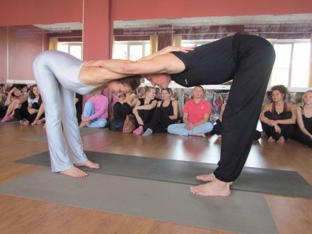
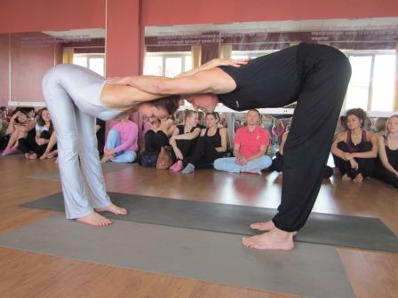

Йога не удаляет нас от реальности и ответственности в повседневной жизни, а скорее дает твердую почву под ногами и практическую
решительность. Мы не выходим за пределы нашей жизни, а возвращаемся к жизни, которую мы оставили
в надежде на что-то лучшее.
Об академии Бабы Йоги
Мы помогаем нашим ученикам найти себя, раскрыть свой потенциал! А в этом нам помогает наш богатый опыт преподавания. К каждому
ученику мы стараемся найти индивидуальный подход. Люди все разные, с разными физическими способностями,
мы видим это и понимаем, поэтому подстраиваемся к каждому человеку, создаем комфортные условия для
его развития!
Наши услуги и цены
К услугам наших учеников опытнейшие инструкторы, с богатым опытом работы! Причем все это по доступным ценам. На наших тренировках
ученик может рассчитывать на то, что подход к нему будет практически индивидуальным!
 
